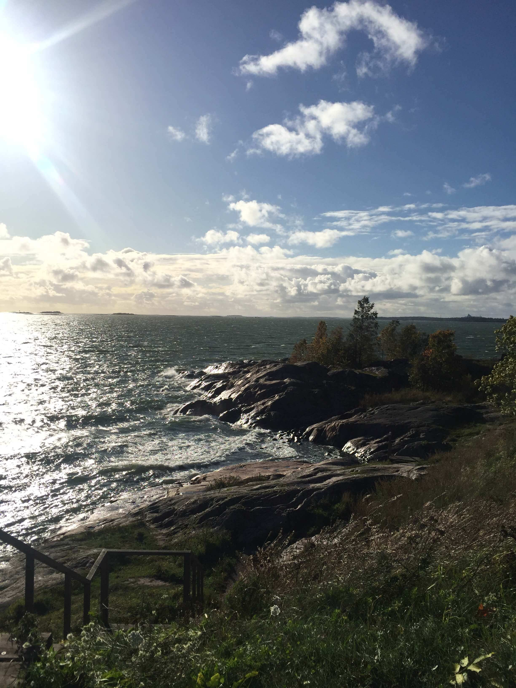
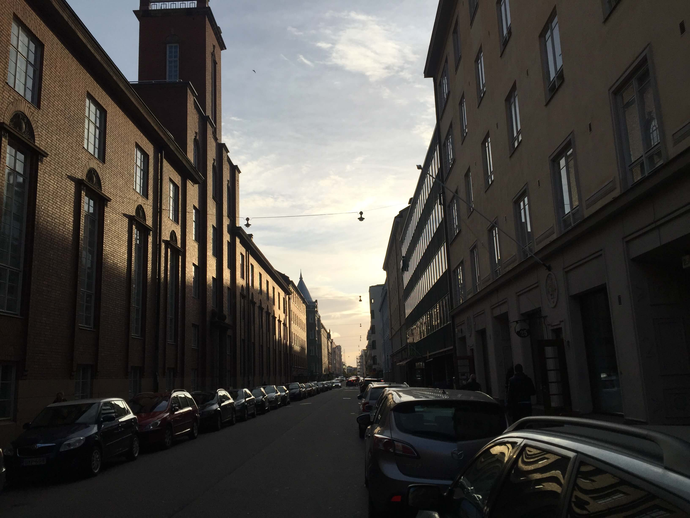
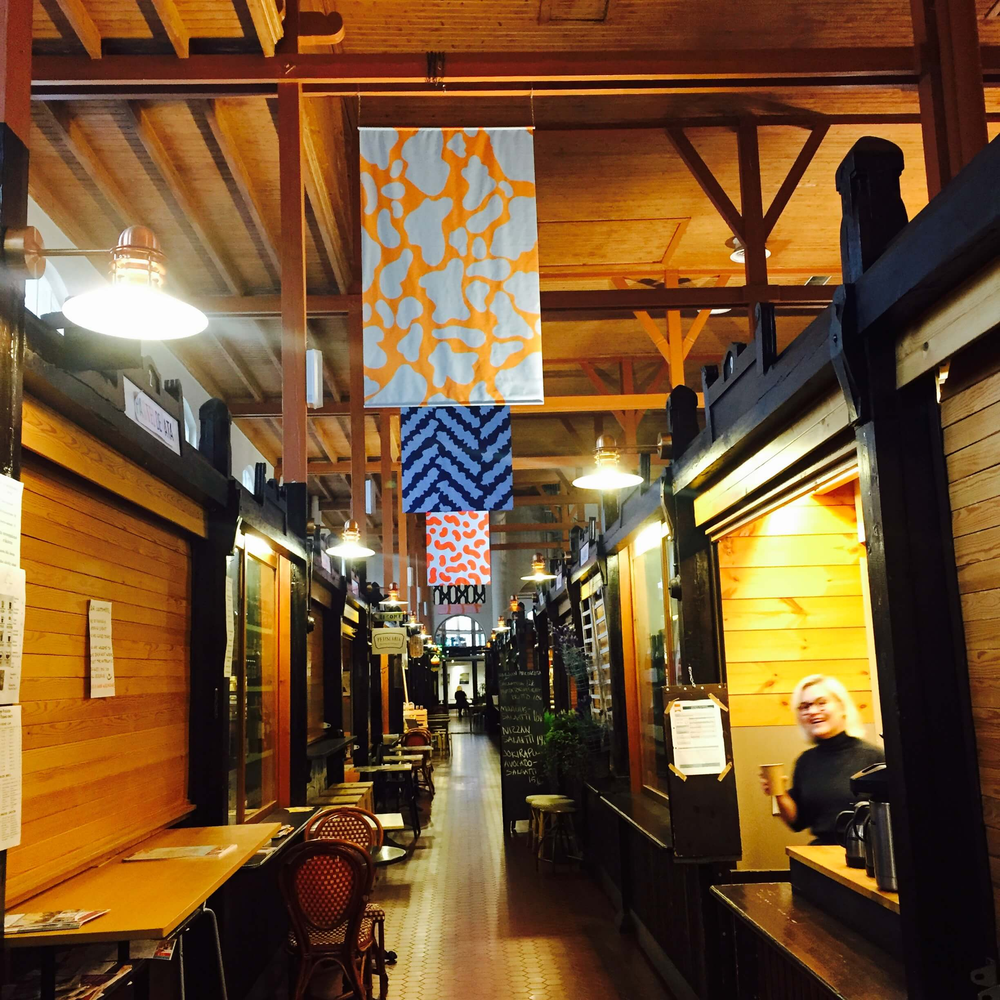
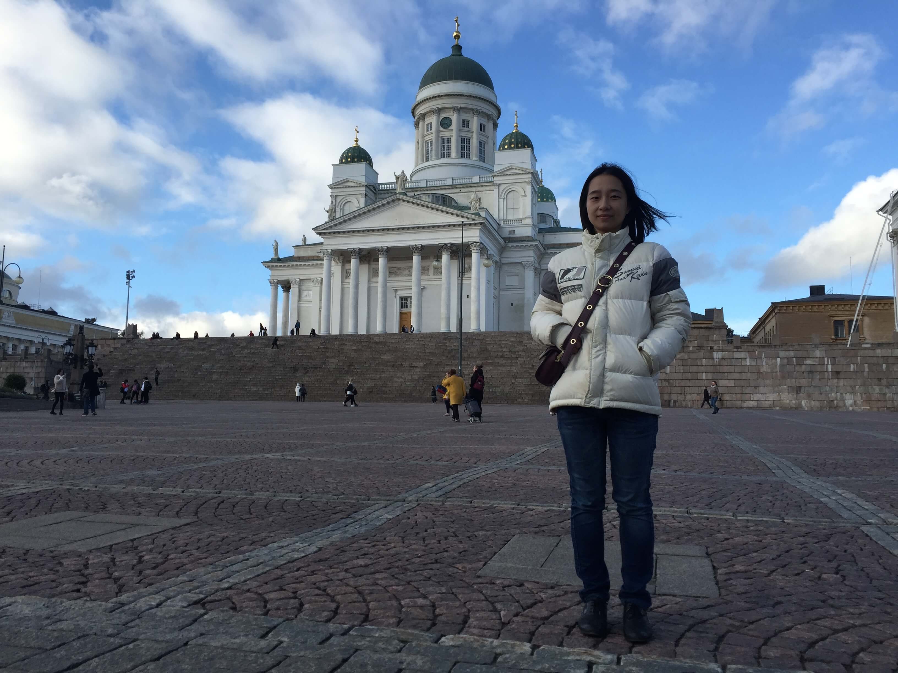
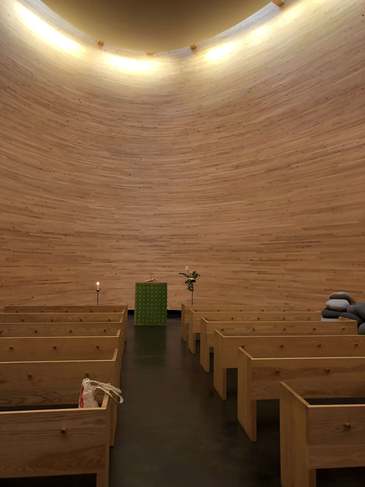
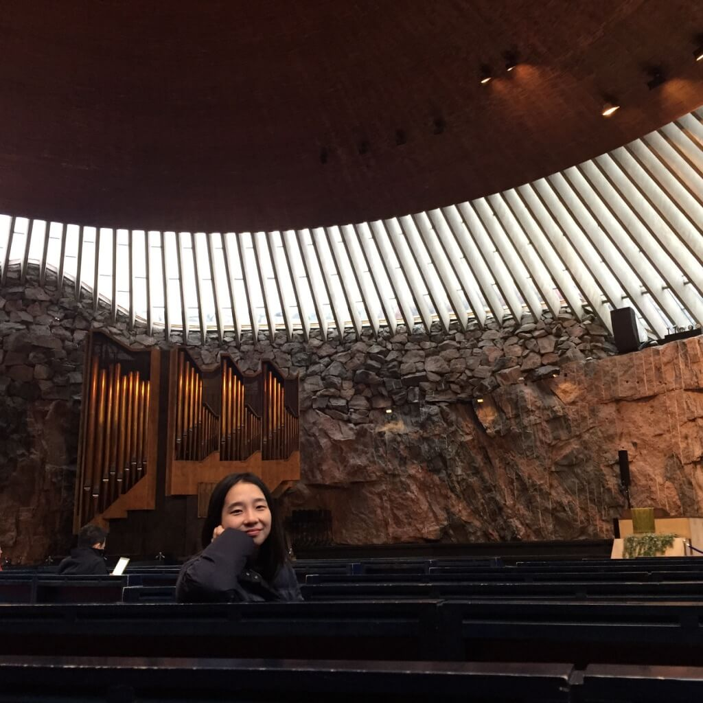
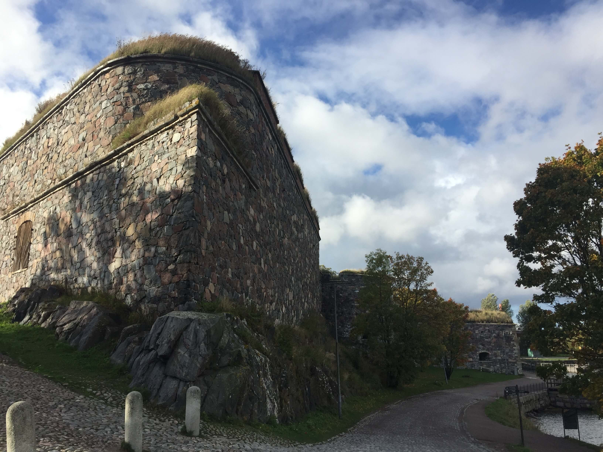
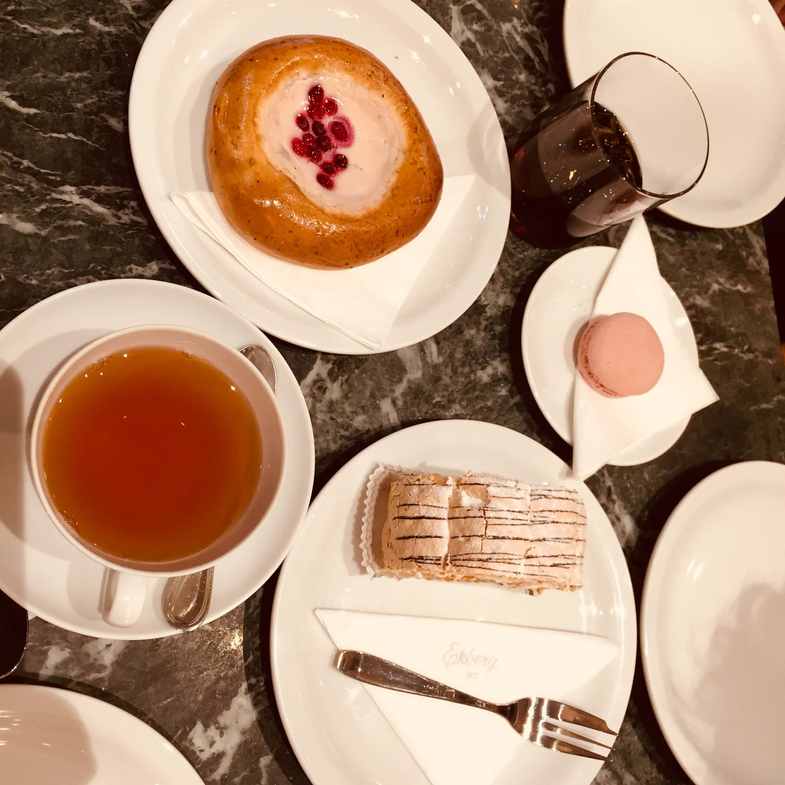

在没有北极光、没有雪的十月去芬兰并不是一个好主意。淫雨霏霏，连月不开，阴风怒号，浊浪排空，日星隐曜，山岳潜形。这是我们来到赫尔辛基的真实写照。尤其是，当做计划的家伙当时是在北京夏日的写字楼里吹着空调凉爽的空调的时候。

我们租住在赫尔辛基市中心的一间老式公寓里，进门以后觉得公寓还挺合心意，隐隐带着熟悉，又似乎正是心中的北欧风格。现在回头想想设计门外汉的我又如何真的了解北欧风格呢，所谓的我所了解熟悉的北欧风不就是宜家么。原来房里各种家具、餐具、甚至洗碗机均来自宜家，39元的方桌放了两个就是床头柜了。另外，房子里的wifi路由器竟然是华为，甚至在市中心最为繁华的地带正对着中央车站就是华为的旗舰店。

公寓门前的街道。
第一天的晚上到达赫尔辛基还挺兴奋，也感觉不到夜风的泠冽，机场出租40欧送到住地也不觉得贵，开开心心洗了澡便休息了。然而，笠日凌晨，难以言喻的时差让所有睡眠严重不足的人三点钟就醒了。有三点起来看菜谱的，三点起来打王者荣耀的，还有三点睁开眼又默默睡觉的。
芬兰天亮得比较晚，八点了天还是蒙蒙亮，做行程计划的人傻乎乎攥着写满了地点的行程表，用爱发电，怀着一腔热血就出了门。行了不过百余米，街角的寒风似乎预示着什么，我们不得不回屋里加了件厚厚的羽绒服，事实证明，这是再正确不过的了。赫尔辛基是港口城市，猛烈的海风裹挟着寒气，气温5到10摄氏度也比在同样温度下的内陆城市体感温度要低得多。即使写着八点半开始营业的室内市场，也是要过了10点才开始慢慢有商家营业。

开门营业却一片空旷室内市场。
这座城市实在是太小了，三天的计划里，有好几个教堂、博物馆、市场。每天就乘坐有轨电车往返于各景点之间。在一天内三次经过旅行团打卡必备，中国各地方言荟萃的赫尔辛基主教座堂的时候，意识到到似乎这城市只有北京二环以内的大小。

市中心，赫尔辛基主教座堂。各大旅行团打卡地点。
赫尔辛基的建筑非常美，不论是向来能表达建筑审美技艺巅峰的各式教堂，抑或是不知名的街道，写字楼，甚至临街落地窗的办公室，都能感觉到此地人们的审美和精致的生活观念。在静默教堂里安安静静地坐着，什么也不想，或者在岩石教堂里想象自己身处于一场无声的交响音乐会，都是不可言喻的乐趣。但是赫尔辛基的博物馆大多勾不起大家兴趣，相对于冬宫、故宫博物院玲琅满目的藏品和悠久的历史，芬兰的国家博物馆并没有什么值得称道的地方，小朋友们倒是很多，即使老师们在约束也难免有些吵闹。让人惊喜的展览只有阿黛浓美术馆，若是有个半天可以消磨就更好了，从油画、雕塑中对于过去的芬兰生活方式的描述，窥见河流、湖泊、森林对于芬兰农民的重要性，例如船上葬礼，伐木，以及传统的火耕农业都常常出现在作品的主题中。

静默教堂，在市中心，外形是个大木桶，教堂里无人说话。

岩石教堂在一座小山丘中，挖空山腹，依势而建。
即使艺术如此美妙，在寒风冷雨中往返奔波，很快就让人感觉到疲惫和乏味。美丽的景点在寒冷中失色，甚至比不上便利店热咖啡的吸引力。
不过旅行的好处在于谁也想不到何时何地能发现新的趣味，渐渐又在乘坐电车中感受到了意趣，感受车上静谧的氛围，人们交谈的声息很轻，几乎能感受到衣物摩擦的响动，雨中窥视着陌生的街景，行人、车辆在街道中井然有序的流动。临街办公室是让我感觉比较有趣的景观，落地的透明玻璃窗，几乎不会拉上窗帘，办公室略低于街道几十公分，人们面对着街道敲打键盘，点击鼠标甚至在桌上绘图。干净整齐的街道，精心设计的建筑，匆匆流逝的行人车辆，也是人们眼中的景观，工作与外界的界限被模糊了，是不是更能激发灵感呢。
第三天的芬兰堡之行不得不说是天公作美了，日见云开，饱满的颜色让岛上的角落也多增了几分颜色。芬兰堡有村庄，有球场，居民住宅散落在过去的军事堡垒中间，旧时的院墙和新式的小屋并存。居民和游客互不干扰，会抢走你冰激凌的白色海鸥、面朝大海的长椅、长满毛绒绒绿草的石头矮墙就是对芬兰堡所有的记忆了。

芬兰堡干式船坞。

芬兰堡城墙。
我们去了传说中沙皇去过的咖啡馆——Ekberg。历史悠久的咖啡馆开在Bulevardi大街上，整条大街都格调很高，咖啡馆不论何时都是几乎满座，装饰传统而华美，食物摆盘也很好看，只可惜，味道不合心意。俄罗斯也好，芬兰也好，点心都太甜了，不用苦味压一压就甜到颤抖了。不过如果是甜食爱好者就另当别论了，咖啡店里许多传统点心，比如加了越橘酱的面包，夹了腌鱼的三明治都是口碑不错的体验。
